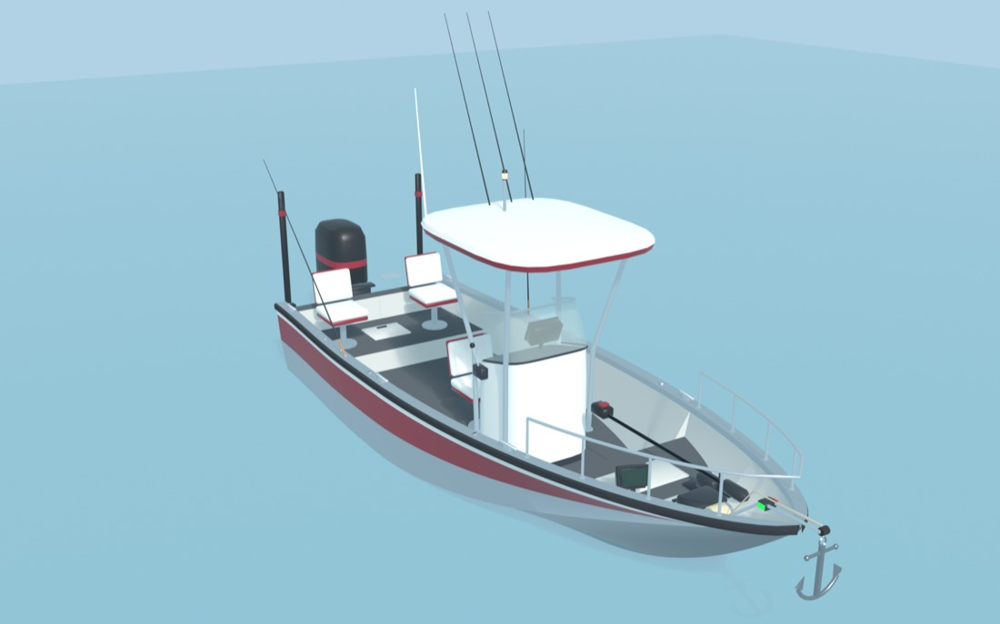
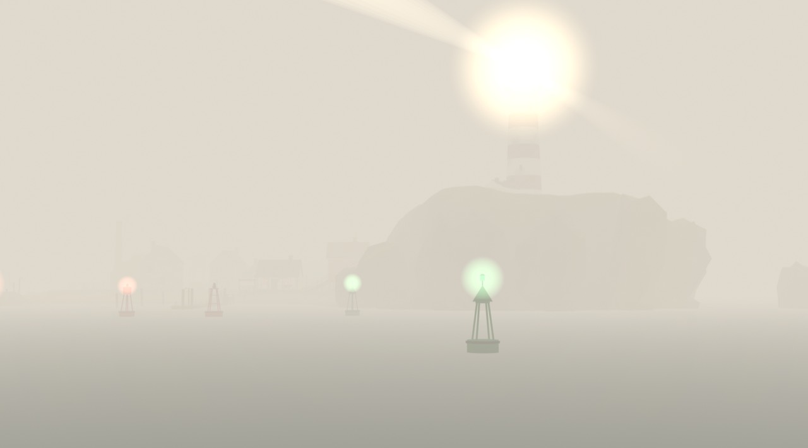
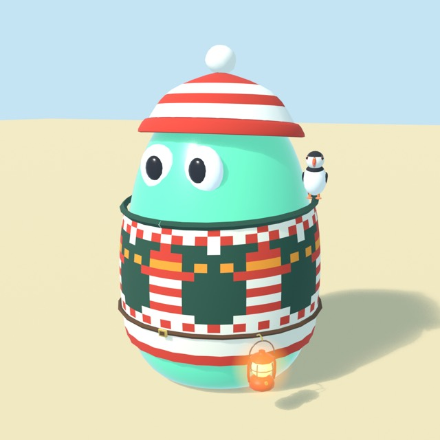

<title>Остров «Последний свет»</title>
<link rel="preconnect" href="https://fonts.googleapis.com">
<link rel="preconnect" href="https://fonts.gstatic.com" crossorigin>
<link rel="stylesheet" href="https://fonts.googleapis.com/css2?family=Alegreya:ital,wght@0,500;0,700;0,800;1,500;1,700&family=Rubik:wght@400;500;600;700&display=swap">
<style>
/* Лоция: страница как морская лоция — бумага карты, тушь, огни бакенов и тёплый свет маяка; ночью — ночная лоция.
   Сетка: одна колонка до 1180 px, разделы-«листы», внутри — плотные сетки карточек и 3D-окна в своих рамках. */
:root {
  --paper: #f2f5f1;        /* белая вода на карте */
  --paper-2: #e6ede9;      /* мелководье */
  --card: #fbfcf9;
  --ink: #172431;          /* тушь */
  --ink-2: #44535f;
  --ink-3: #6f7e89;
  --rule: #cdd8d6;
  --rule-2: #b6c4c3;
  --sea: #cde2e9;
  --sea-2: #9cc3d1;
  --land: #ece0bd;
  --land-ink: #8a7445;
  --beam: #e8902a;         /* свет маяка */
  --beam-ink: #9a520a;     /* он же для текста */
  --beam-soft: #fbe3c0;
  --port: #c63a31;         /* красный бакен */
  --stbd: #2b8656;         /* зелёный бакен */
  --fog: #d9d3c9;
  --shadow: 0 1px 0 rgba(23, 36, 49, .05), 0 8px 24px -14px rgba(23, 36, 49, .28);
  --pl-pier: #b98326;
  --pl-barkas: #2a78a6;
  --pl-isle: #b2434e;
  --b-volzhanka: #d46f24; --b-albakor: #24937a; --b-northsilver: #8e2f4a;
  --ghost: #b9c3c6;
  --coin: #f2c14e; --coin-edge: #a86f10;
  --good: #2b8656;
  --bad: #c63a31;
  --t0: #8f9aa3; --t1: #2f86d8; --t2: #9a4ee0; --t3: #eb9a12; --t4: #e8364f; --t7: #18b7a6;
  --f-display: "Alegreya", "Iowan Old Style", "Palatino Linotype", Georgia, serif;
  --f-body: "Rubik", "Segoe UI", system-ui, -apple-system, sans-serif;
  --r: 10px;
  --gut: clamp(16px, 4vw, 32px);
}
@media (prefers-color-scheme: dark) {
  :root:not([data-theme="light"]) {
    --paper: #0d1821; --paper-2: #122230; --card: #15252f;
    --ink: #e6edea; --ink-2: #aab9bf; --ink-3: #7f919b;
    --rule: #243845; --rule-2: #31495a;
    --sea: #143341; --sea-2: #1f5064;
    --land: #2f2e22; --land-ink: #c7b27a;
    --beam: #ffb347; --beam-ink: #ffc06a; --beam-soft: #3a2a14;
    --port: #ff6b5e; --stbd: #4fc487; --fog: #4a4f54;
    --shadow: 0 1px 0 rgba(0, 0, 0, .3), 0 10px 28px -16px rgba(0, 0, 0, .7);
    --pl-pier: #b8862c; --pl-barkas: #4b97c6; --pl-isle: #d05d68; --b-volzhanka: #f08d45; --b-albakor: #4cc3a6; --b-northsilver: #e07a95;
    --ghost: #3a4d59; --good: #4fc487; --bad: #ff6b5e;
    color-scheme: dark;
  }
}
:root[data-theme="dark"] {
  --paper: #0d1821; --paper-2: #122230; --card: #15252f;
  --ink: #e6edea; --ink-2: #aab9bf; --ink-3: #7f919b;
  --rule: #243845; --rule-2: #31495a;
  --sea: #143341; --sea-2: #1f5064;
  --land: #2f2e22; --land-ink: #c7b27a;
  --beam: #ffb347; --beam-ink: #ffc06a; --beam-soft: #3a2a14;
  --port: #ff6b5e; --stbd: #4fc487; --fog: #4a4f54;
  --shadow: 0 1px 0 rgba(0, 0, 0, .3), 0 10px 28px -16px rgba(0, 0, 0, .7);
  --pl-pier: #b8862c; --pl-barkas: #4b97c6; --pl-isle: #d05d68; --b-volzhanka: #f08d45; --b-albakor: #4cc3a6; --b-northsilver: #e07a95;
  --ghost: #3a4d59; --good: #4fc487; --bad: #ff6b5e;
  color-scheme: dark;
}

* { box-sizing: border-box; }
[hidden] { display: none !important; }
html { scroll-behavior: smooth; scroll-padding-top: 64px; }
@media (prefers-reduced-motion: reduce) { html { scroll-behavior: auto; } *, *::before, *::after { animation-duration: .001ms !important; animation-iteration-count: 1 !important; transition-duration: .001ms !important; } }
body {
  margin: 0; background: var(--paper); color: var(--ink);
  font: 400 16px/1.5 var(--f-body); -webkit-font-smoothing: antialiased; font-variant-numeric: lining-nums; font-feature-settings: "lnum" 1;
}
img { max-width: 100%; display: block; }
.dg { font-family: var(--f-body); font-style: normal; font-size: .9em; letter-spacing: 0; }
a { color: var(--beam-ink); text-underline-offset: 3px; }
button { font: inherit; color: inherit; }
:focus-visible { outline: 3px solid var(--beam); outline-offset: 2px; border-radius: 6px; }
h1, h2, h3 { text-wrap: balance; margin: 0; }
p { margin: 0; }
.num { font-variant-numeric: lining-nums tabular-nums; }
.wrap { max-width: 1180px; margin: 0 auto; padding-inline: var(--gut); }
.coin { display: inline-block; width: .95em; height: .95em; vertical-align: -.12em; margin-left: .12em; fill: var(--coin); stroke: var(--coin-edge); stroke-width: 1.3; }
.ico { width: 20px; height: 20px; flex: none; fill: none; stroke: currentColor; stroke-width: 1.8; stroke-linecap: round; stroke-linejoin: round; }

/* ------------------------------------------------ шапка */
.hero { position: relative; background: var(--ink); color: #f6f1e7; overflow: hidden; }
.hero .art { position: absolute; inset: 0; background: url("img/isle-loading.webp") center 35% / cover no-repeat; }
.hero .art::after { content: ""; position: absolute; inset: 0; background: linear-gradient(90deg, rgba(10, 20, 28, .86) 0%, rgba(10, 20, 28, .62) 42%, rgba(10, 20, 28, .05) 75%), linear-gradient(0deg, rgba(10, 20, 28, .55), transparent 40%); }
.hero .wrap { position: relative; padding-block: 56px 28px; }
.kicker { font: 600 12px/1.2 var(--f-body); letter-spacing: .14em; text-transform: uppercase; color: #ffd08a; }
.hero h1 { font: 800 clamp(40px, 6.4vw, 76px)/.98 var(--f-display); letter-spacing: -.01em; margin: 12px 0 16px; }
.hero h1 em { display: block; font-style: italic; font-weight: 700; color: #ffd08a; }
.hero .lead { max-width: 56ch; font-size: 18px; color: #e9e3d6; }
.hero .decide { max-width: 56ch; margin-top: 10px; color: #c9c3b6; font-size: 15px; }
.decisions { display: grid; grid-template-columns: repeat(4, minmax(0, 1fr)); gap: 8px; margin-top: 26px; }
.decisions a {
  display: flex; flex-direction: column; gap: 2px; padding: 11px 13px; border-radius: var(--r); text-decoration: none;
  background: rgba(246, 241, 231, .1); border: 1px solid rgba(246, 241, 231, .2); color: #f6f1e7; backdrop-filter: blur(6px);
  transition: background .2s, border-color .2s;
}
.decisions a:hover { background: rgba(246, 241, 231, .18); border-color: rgba(255, 208, 138, .6); }
.decisions a b { font-weight: 600; font-size: 15px; }
.decisions a span { font-size: 13px; color: #cfc8ba; }
.decisions a.accent { background: #e8902a; border-color: #e8902a; color: #1d1206; }
.decisions a.accent span { color: #4a2c08; }
@media (max-width: 860px) { .decisions { grid-template-columns: repeat(2, minmax(0, 1fr)); } }
@media (max-width: 560px) {
  .hero .art { position: relative; height: 210px; inset: auto; }
  .hero .art::after { background: linear-gradient(0deg, var(--ink), transparent 60%); }
  .hero .wrap { padding-block: 4px 24px; }
  .hero .lead { font-size: 16px; }
}

/* ------------------------------------------------ курс (навигация) */
.course { position: sticky; top: env(safe-area-inset-top, 0px); z-index: 20; background: var(--paper); border-bottom: 1px solid var(--rule); }
.course ol { list-style: none; margin: 0 auto; max-width: 1180px; padding: 0 var(--gut); display: flex; gap: 2px; overflow-x: auto; scrollbar-width: none; }
.course ol::-webkit-scrollbar { display: none; }
.course a { display: flex; align-items: center; gap: 7px; padding: 12px 10px; white-space: nowrap; text-decoration: none; color: var(--ink-2); font-size: 14px; font-weight: 500; border-bottom: 2px solid transparent; }
.course a i { width: 8px; height: 8px; border-radius: 50%; background: var(--rule-2); flex: none; }
.course a:hover { color: var(--ink); }
.course a.on { color: var(--ink); border-bottom-color: var(--beam); }
.course a.on i { background: var(--beam); box-shadow: 0 0 0 3px var(--beam-soft); }

/* ------------------------------------------------ разделы */
section.sheet { padding-block: 56px 8px; }
.sh { display: grid; grid-template-columns: minmax(0, 1fr) auto; gap: 8px 24px; align-items: end; margin-bottom: 22px; }
.sh h2 { font: 800 clamp(30px, 4vw, 44px)/1.02 var(--f-display); letter-spacing: -.005em; }
.sh h2 em { font-style: italic; font-weight: 700; color: var(--beam-ink); }
.sh p { grid-column: 1 / -1; max-width: 70ch; color: var(--ink-2); font-size: 17px; }
.sh .tag { font: 600 12px var(--f-body); letter-spacing: .1em; text-transform: uppercase; color: var(--ink-3); }
@media (max-width: 620px) { .sh { grid-template-columns: minmax(0, 1fr); } .sh .tag { order: -1; } }
h3.sub { font: 700 22px/1.15 var(--f-display); margin: 34px 0 12px; }
h3.sub small { font: 400 15px var(--f-body); color: var(--ink-3); margin-left: 8px; }
.muted { color: var(--ink-3); }
.small { font-size: 14px; }
.note { font-size: 14px; color: var(--ink-3); margin-top: 10px; max-width: 80ch; }
.panel { background: var(--card); border: 1px solid var(--rule); border-radius: var(--r); box-shadow: var(--shadow); }
.grid { display: grid; gap: 14px; }
.g2 { grid-template-columns: repeat(2, minmax(0, 1fr)); }
.g3 { grid-template-columns: repeat(3, minmax(0, 1fr)); }
.g4 { grid-template-columns: repeat(4, minmax(0, 1fr)); }
@media (max-width: 980px) { .g4 { grid-template-columns: repeat(2, minmax(0, 1fr)); } .g3 { grid-template-columns: repeat(2, minmax(0, 1fr)); } }
@media (max-width: 620px) { .g2, .g3, .g4 { grid-template-columns: minmax(0, 1fr); } }
.chips { display: flex; flex-wrap: wrap; gap: 6px; }
.chip { display: inline-flex; align-items: center; gap: 5px; padding: 3px 9px; border-radius: 999px; font-size: 13px; line-height: 1.35; background: var(--paper-2); color: var(--ink-2); border: 1px solid var(--rule); }
.chip.t { color: var(--ink); }
.chip.t::before { content: ""; width: 9px; height: 9px; border-radius: 50%; background: var(--tc, var(--t0)); }
.chip.fog { background: var(--fog); color: var(--ink); border-color: transparent; }
.chip.beam { background: var(--beam-soft); color: var(--beam-ink); border-color: transparent; }
.btn {
  display: inline-flex; align-items: center; gap: 7px; padding: 8px 14px; border-radius: 8px; cursor: pointer;
  background: var(--card); border: 1px solid var(--rule-2); font-size: 14px; font-weight: 500; color: var(--ink); text-decoration: none;
  transition: background .15s, border-color .15s;
}
.btn:hover { border-color: var(--ink-3); }
.btn.on, .btn[aria-pressed="true"] { background: var(--ink); color: var(--paper); border-color: var(--ink); }
.btn.main { background: var(--beam); border-color: var(--beam); color: #1d1206; font-weight: 600; }
.btn.main:hover { filter: brightness(1.05); }
.btn:disabled { opacity: .5; cursor: default; }
.seg { display: inline-flex; flex-wrap: wrap; max-width: 100%; padding: 3px; gap: 2px; background: var(--paper-2); border: 1px solid var(--rule); border-radius: 9px; }
.seg button { border: 0; background: transparent; padding: 6px 12px; border-radius: 7px; cursor: pointer; font-size: 14px; color: var(--ink-2); }
.seg button[aria-pressed="true"] { background: var(--card); color: var(--ink); box-shadow: 0 1px 2px rgba(0, 0, 0, .12); font-weight: 600; }
.toolbar { display: flex; flex-wrap: wrap; gap: 8px; align-items: center; }
.toolbar .sep { width: 1px; align-self: stretch; background: var(--rule); margin: 0 4px; }
.scrollx { overflow-x: auto; -webkit-overflow-scrolling: touch; }
table.t { border-collapse: collapse; width: 100%; font-size: 14px; }
table.t th, table.t td { padding: 8px 10px; border-bottom: 1px solid var(--rule); text-align: left; vertical-align: top; }
table.t th { font-weight: 600; color: var(--ink-3); font-size: 13px; }
table.t td.n, table.t th.n { text-align: right; font-variant-numeric: lining-nums tabular-nums; white-space: nowrap; }
table.t tbody tr:hover { background: color-mix(in srgb, var(--paper-2) 60%, transparent); }

/* ------------------------------------------------ хотфиксы */
.fixes { display: grid; grid-template-columns: repeat(3, minmax(0, 1fr)); gap: 10px; }
.fix.wide { grid-column: 3; grid-row: 1 / span 2; }
.fix { padding: 14px; display: flex; flex-direction: column; gap: 6px; }
.fix .ico { width: 26px; height: 26px; color: var(--beam-ink); }
.fix b { font-weight: 600; line-height: 1.3; }
.fix p { font-size: 14px; color: var(--ink-2); }
.fix .pics { display: grid; grid-template-columns: 1fr 1fr; gap: 6px; margin-top: 4px; }
.fix .pics figure { margin: 0; font-size: 12px; color: var(--ink-3); }
.fix .pics img { height: 64px; width: 100%; object-fit: contain; }
.fix .pics b { display: block; font-size: 12px; color: var(--ink); }
@media (max-width: 860px) { .fixes { grid-template-columns: repeat(2, minmax(0, 1fr)); } .fix.wide { grid-column: span 2; grid-row: auto; } }
@media (max-width: 560px) { .fixes { grid-template-columns: minmax(0, 1fr); } .fix.wide { grid-column: auto; } }

/* ------------------------------------------------ 3D-окна */
.viewer { position: relative; border-radius: var(--r); overflow: hidden; background: #b9d3db; aspect-ratio: 16 / 9; max-width: 100%; border: 1px solid var(--rule); }
.viewer.tall { aspect-ratio: 16 / 10; }
.viewer canvas { position: absolute; inset: 0; width: 100%; height: 100%; display: block; touch-action: none; }
.viewer .poster { position: absolute; inset: 0; width: 100%; height: 100%; object-fit: cover; }
.viewer .start { position: absolute; inset: 0; display: grid; place-items: center; background: linear-gradient(0deg, rgba(10, 20, 28, .45), rgba(10, 20, 28, .05)); border: 0; cursor: pointer; color: #fff; }
.viewer .start span { display: inline-flex; align-items: center; gap: 10px; padding: 12px 20px; border-radius: 999px; background: rgba(10, 20, 28, .72); font-weight: 600; font-size: 16px; backdrop-filter: blur(4px); }
.viewer .start:hover span { background: rgba(10, 20, 28, .86); }
.viewer .start small { display: block; font-weight: 400; font-size: 13px; opacity: .8; }
.viewer .hud { position: absolute; left: 10px; bottom: 10px; display: flex; flex-wrap: wrap; gap: 6px; pointer-events: none; }
.viewer .hud span { background: rgba(10, 20, 28, .66); color: #f2efe8; padding: 3px 9px; border-radius: 999px; font-size: 12px; font-variant-numeric: lining-nums tabular-nums; }
.viewer .load { position: absolute; inset: auto 0 0 0; height: 3px; background: rgba(255, 255, 255, .25); }
.viewer .load i { display: block; height: 100%; width: 0; background: var(--beam); transition: width .2s; }
.viewer .tip { position: absolute; right: 10px; top: 10px; background: rgba(10, 20, 28, .66); color: #f2efe8; font-size: 12px; padding: 4px 10px; border-radius: 999px; pointer-events: none; }
.viewer .lbl { position: absolute; left: 0; top: 0; transform: translate(-50%, -120%); pointer-events: none; white-space: nowrap; font-size: 12px; font-weight: 600; padding: 3px 8px; border-radius: 6px; background: rgba(255, 250, 240, .92); color: #172431; box-shadow: 0 2px 6px rgba(0, 0, 0, .2); }
.viewer .toast { position: absolute; left: 50%; top: 12px; transform: translateX(-50%); max-width: calc(100% - 24px); background: rgba(10, 20, 28, .85); color: #fff; padding: 8px 14px; border-radius: 10px; font-size: 14px; text-align: center; transition: opacity .3s; }
.viewer .err { position: absolute; inset: 0; display: grid; place-items: center; text-align: center; padding: 20px; background: rgba(10, 20, 28, .7); color: #fff; font-size: 15px; }
.vbar { margin-top: 10px; }
.slots { display: grid; grid-template-columns: repeat(10, minmax(0, 1fr)); gap: 4px; margin-top: 8px; }
.slots span { display: grid; place-items: center; min-width: 0; padding: 4px 3px; border-radius: 6px; font-size: 11.5px; border: 1px solid var(--rule); background: var(--paper-2); color: var(--ink-3); line-height: 1.2; text-align: center; }
.slots span.busy { background: var(--card); color: var(--ink); border-color: var(--rule-2); }
.slots span.old { border-color: var(--port); }
.slots span b { font-size: 13px; }
@media (max-width: 700px) { .slots { grid-template-columns: repeat(5, minmax(0, 1fr)); } .slots span { font-size: 11px; padding: 4px 2px; overflow-wrap: anywhere; } }

/* ------------------------------------------------ способности */
.frame { border: 1px solid var(--rule); border-radius: var(--r); overflow: hidden; background: #f3e7cf; }
.frame iframe { display: block; width: 100%; height: 1180px; border: 0; }
.framebar { display: flex; flex-wrap: wrap; gap: 10px; align-items: center; justify-content: space-between; margin-bottom: 10px; }
.rules { display: grid; grid-template-columns: repeat(4, minmax(0, 1fr)); gap: 10px; margin-top: 18px; }
.rule { padding: 14px; display: grid; grid-template-columns: auto 1fr; gap: 4px 10px; }
.rule .ico { grid-row: span 2; width: 24px; height: 24px; color: var(--beam-ink); margin-top: 2px; }
.rule b { font-weight: 600; }
.rule p { font-size: 14px; color: var(--ink-2); }
@media (max-width: 980px) { .rules { grid-template-columns: repeat(2, minmax(0, 1fr)); } }
@media (max-width: 560px) { .rules { grid-template-columns: minmax(0, 1fr); } }
.fill { padding: 14px 16px; margin-top: 10px; display: grid; grid-template-columns: auto minmax(0, 1fr) auto; gap: 8px 14px; align-items: center; }
.fill .bar { height: 12px; border-radius: 6px; background: var(--paper-2); overflow: hidden; position: relative; }
.fill .bar i { position: absolute; inset: 0 auto 0 0; width: 100%; border-radius: 6px; transform-origin: left; animation: fill5 7.5s linear infinite; background: var(--ghost); }
.fill .bar.now i { background: var(--t4); animation-name: fill6; }
.fill span { font-size: 14px; color: var(--ink-2); white-space: nowrap; }
@media (max-width: 700px) { .fill { grid-template-columns: auto minmax(0, 1fr); } .fill span.muted { grid-column: 1 / -1; white-space: normal; margin: -4px 0 6px; font-size: 13px; } }
@keyframes fill5 { 0% { transform: scaleX(0); } 66.7%, 100% { transform: scaleX(1); } }
@keyframes fill6 { 0% { transform: scaleX(0); } 80%, 100% { transform: scaleX(1); } }
.abcards { display: grid; grid-template-columns: repeat(4, minmax(0, 1fr)); gap: 12px; }
@media (max-width: 1080px) { .abcards { grid-template-columns: repeat(2, minmax(0, 1fr)); } }
@media (max-width: 560px) { .abcards { grid-template-columns: minmax(0, 1fr); } }
.ab { padding: 14px; display: flex; flex-direction: column; gap: 9px; border-top: 4px solid var(--tc); }
.ab .top { display: grid; grid-template-columns: minmax(0, 1fr) 56px; gap: 8px; align-items: start; }
.ab .who { font-size: 13px; color: var(--ink-3); }
.ab .who b { color: var(--ink); font-size: 15px; font-weight: 600; display: block; }
.ab h4 { font: italic 700 23px/1.1 var(--f-display); margin: 0; color: var(--ink); }
.ab img.fishpic { height: 44px; width: 100%; object-fit: contain; object-position: left center; }
.ab svg.glyph { width: 56px; height: 72px; }
.ab p { font-size: 14px; color: var(--ink-2); }
.ab .lv { font-size: 13px; color: var(--ink-3); display: grid; gap: 4px; }
.ab .lv .row { display: grid; grid-template-columns: 74px minmax(0, 1fr) 40px; align-items: center; gap: 8px; }
.ab .lv .track { height: 6px; background: var(--paper-2); border-radius: 3px; position: relative; overflow: hidden; }
.ab .lv .track i { position: absolute; inset: 0 auto 0 0; border-radius: 3px; background: var(--ghost); }
.ab .lv .track i.now { background: var(--tc); }
.ab .lv b { color: var(--ink); text-align: right; font-variant-numeric: lining-nums tabular-nums; }
.ab .try { margin-top: auto; align-self: flex-start; }
.succ td { min-width: 112px; }
.succ .cell { display: grid; gap: 3px; }
.succ .cell .v { font-variant-numeric: lining-nums tabular-nums; white-space: nowrap; }
.succ .cell .v s { text-decoration: none; color: var(--ink-3); }
.succ .cell .v b.dn { color: var(--bad); }
.succ .cell .v b.up { color: var(--good); }
.succ .cell .bars { display: grid; gap: 2px; }
.succ .cell .bars i { display: block; height: 4px; border-radius: 2px; background: var(--ghost); }
.succ .cell .bars i.now { background: var(--tc, var(--ink-2)); }
.succ th.rowh { white-space: nowrap; font-size: 14px; color: var(--ink); font-weight: 500; }
.succ th.rowh::before { content: ""; display: inline-block; width: 9px; height: 9px; border-radius: 50%; background: var(--tc); margin-right: 7px; }
.decided { columns: 2; column-gap: 28px; padding-left: 18px; margin: 0; font-size: 15px; color: var(--ink-2); }
.decided li { margin-bottom: 6px; break-inside: avoid; }
@media (max-width: 620px) { .decided { columns: 1; } }

/* ------------------------------------------------ уровни */
.ladder { display: grid; grid-template-columns: repeat(5, minmax(0, 1fr)); gap: 10px; counter-reset: lv; }
@media (max-width: 980px) { .ladder { grid-template-columns: repeat(3, minmax(0, 1fr)); } }
@media (max-width: 620px) { .ladder { grid-template-columns: minmax(0, 1fr); } }
.step { position: relative; padding: 12px 14px 14px; display: grid; grid-template-columns: auto minmax(0, 1fr); gap: 2px 12px; align-content: start; }
.step .lvn { grid-row: span 3; display: grid; place-items: center; width: 44px; height: 44px; border-radius: 50%; background: var(--paper-2); color: var(--ink); font: 800 21px/1 var(--f-display); position: relative; }
.step .lvn .ico { position: absolute; right: -8px; bottom: -8px; width: 26px; height: 26px; padding: 4px; stroke-width: 2; border-radius: 50%; background: var(--card); color: var(--beam-ink); border: 1px solid var(--rule); }
.step b { font-weight: 600; line-height: 1.25; }
.step p { font-size: 14px; color: var(--ink-2); }
.step .eff { justify-self: start; margin-top: 4px; }
.step.strong { background: linear-gradient(180deg, var(--beam-soft), var(--card) 70%); border-color: color-mix(in srgb, var(--beam) 50%, var(--rule)); }
.step.strong .lvn { background: var(--beam); color: #1d1206; }
.step .rise { position: absolute; left: 0; right: 0; top: 0; height: 3px; border-radius: var(--r) var(--r) 0 0; background: linear-gradient(90deg, var(--beam) var(--p), transparent var(--p)); opacity: .7; }

/* ------------------------------------------------ лодки */
.boatcards { display: grid; grid-template-columns: repeat(3, minmax(0, 1fr)); gap: 12px; }
@media (max-width: 860px) { .boatcards { grid-template-columns: minmax(0, 1fr); } }
.boat { display: flex; flex-direction: column; text-align: left; padding: 0; overflow: hidden; cursor: pointer; border-width: 1px; }
.boat[aria-pressed="true"] { border-color: var(--beam); box-shadow: 0 0 0 2px var(--beam), var(--shadow); }
.boat img { aspect-ratio: 16 / 10; object-fit: cover; width: 100%; background: var(--sea); }
.boat .bd { padding: 12px 14px 14px; display: grid; gap: 8px; }
.boat h4 { font: 800 24px/1 var(--f-display); margin: 0; }
.boat .proto { font-size: 13px; color: var(--ink-3); }
.boat .meter { display: grid; grid-template-columns: 70px minmax(0, 1fr) 76px; gap: 8px; align-items: center; font-size: 13px; color: var(--ink-2); }
.boat .meter .tr { height: 6px; border-radius: 3px; background: var(--paper-2); overflow: hidden; }
.boat .meter .tr i { display: block; height: 100%; border-radius: 3px; background: var(--ink-2); }
.boat .meter b { font-weight: 600; color: var(--ink); text-align: right; font-variant-numeric: lining-nums tabular-nums; }
.boat .trip { display: flex; justify-content: space-between; align-items: baseline; border-top: 1px dashed var(--rule-2); padding-top: 8px; }
.boat .trip b { font: 800 26px/1 var(--f-display); color: var(--beam-ink); }
.boat .price { display: flex; justify-content: space-between; font-size: 14px; font-weight: 600; background: var(--paper-2); border-radius: 8px; padding: 7px 10px; }
.keys { display: grid; grid-template-columns: repeat(auto-fill, minmax(230px, 1fr)); gap: 8px 18px; font-size: 14px; color: var(--ink-2); }
.keys div { display: flex; gap: 10px; align-items: baseline; }
kbd { display: inline-block; min-width: 26px; text-align: center; padding: 1px 7px; border-radius: 6px; border: 1px solid var(--rule-2); border-bottom-width: 2px; background: var(--card); font: 600 12px/20px var(--f-body); color: var(--ink); white-space: nowrap; }
.boatgrid { display: grid; grid-template-columns: minmax(0, 1fr) 300px; gap: 14px; align-items: start; }
@media (max-width: 980px) { .boatgrid { grid-template-columns: minmax(0, 1fr); } }
.side { padding: 14px 16px; display: grid; gap: 10px; font-size: 14px; color: var(--ink-2); }
.side h4 { margin: 0; font: 700 18px var(--f-display); color: var(--ink); }
.side ul { margin: 0; padding-left: 18px; display: grid; gap: 6px; }

/* ------------------------------------------------ карта маршрута */
.chart-map { padding: 10px; }
.chart-map svg { display: block; width: 100%; min-width: 860px; height: auto; }
.map-sea { fill: var(--sea); }
.map-land { fill: var(--land); stroke: var(--land-ink); stroke-width: 2; }
.map-fan { fill: var(--land); opacity: .55; }
.map-ring { fill: none; stroke-width: 3; }
.map-ring.far { stroke: var(--ink-3); stroke-dasharray: 24 14; }
.map-ring.haze { stroke: var(--ink-3); stroke-dasharray: 6 10; }
.map-ring.light { stroke: var(--beam); stroke-dasharray: 18 10; }
.map-ring.draw { stroke: var(--pl-barkas); stroke-dasharray: 10 8; }
.map-ring.waters { stroke: var(--pl-isle); fill: color-mix(in srgb, var(--fog) 55%, transparent); }
.map-route { fill: none; stroke: var(--ink); stroke-width: 4; stroke-dasharray: 22 12; }
.map-txt { fill: var(--ink); font: 500 40px var(--f-body); }
.map-txt.it { font: italic 500 46px var(--f-display); fill: var(--ink-2); }
.map-txt.big { font: italic 700 66px var(--f-display); fill: var(--ink); }
.map-txt.s { font-size: 32px; fill: var(--ink-3); }
.map-inset-bg { fill: var(--sea); stroke: var(--ink-2); stroke-width: 3; }
.map-inset .t { fill: var(--ink); font: 500 9px var(--f-body); }
.map-inset .t.s { fill: var(--ink-3); font-size: 7.5px; }
.map-grid { stroke: var(--sea-2); stroke-width: 1.5; opacity: .6; }
.map-buoy { fill: var(--port); stroke: var(--card); stroke-width: 4; }
.map-buoy.g { fill: var(--stbd); }
.map-buoy.f { fill: var(--card); stroke: var(--port); stroke-width: 6; }
.map-boat { stroke: var(--card); stroke-width: 5; }
.legend { display: flex; flex-wrap: wrap; gap: 6px 18px; font-size: 13px; color: var(--ink-2); margin-top: 8px; }
.legend span { display: inline-flex; align-items: center; gap: 7px; }
.legend i { width: 22px; height: 0; border-top: 3px dashed currentColor; }
.race { display: grid; grid-template-columns: repeat(3, minmax(0, 1fr)); gap: 8px; margin-top: 10px; }
.race div { padding: 8px 12px; border-radius: 8px; background: var(--paper-2); display: flex; justify-content: space-between; align-items: center; gap: 8px; font-size: 14px; }
.race div b { font: 700 20px var(--f-display); font-variant-numeric: lining-nums tabular-nums; }
.race div i { width: 12px; height: 12px; border-radius: 50%; display: inline-block; margin-right: 6px; vertical-align: -1px; }
@media (max-width: 560px) { .race { grid-template-columns: minmax(0, 1fr); } }

/* ------------------------------------------------ остров */
.islegrid { display: grid; grid-template-columns: minmax(0, 1fr) 280px; gap: 14px; align-items: start; }
@media (max-width: 980px) { .islegrid { grid-template-columns: minmax(0, 1fr); } }
.ruler { padding: 12px 14px; }
.ruler h4 { margin: 0 0 8px; font: 700 18px var(--f-display); }
.ruler ol { list-style: none; margin: 0; padding: 0; display: grid; gap: 2px; }
.ruler li { display: grid; grid-template-columns: 64px minmax(0, 1fr); gap: 10px; padding: 7px 8px; border-radius: 8px; font-size: 13px; color: var(--ink-3); transition: background .3s, color .3s; }
.ruler li b { font: 700 16px var(--f-display); color: var(--ink-2); font-variant-numeric: lining-nums tabular-nums; }
.ruler li.on { background: var(--beam-soft); color: var(--ink); }
.ruler li.on b { color: var(--beam-ink); }
.ruler .dist { margin-top: 8px; font-size: 14px; color: var(--ink-2); }
.ruler .dist b { font: 800 24px var(--f-display); color: var(--ink); font-variant-numeric: lining-nums tabular-nums; }
.fogctl { display: grid; grid-template-columns: auto minmax(120px, 280px) auto; gap: 10px; align-items: center; font-size: 13px; color: var(--ink-2); }
.fogctl input { width: 100%; accent-color: var(--beam); }
.renders { display: grid; grid-template-columns: repeat(4, minmax(0, 1fr)); gap: 10px; }
@media (max-width: 860px) { .renders { grid-template-columns: repeat(2, minmax(0, 1fr)); } }
.shot { margin: 0; padding: 0; border: 0; background: none; text-align: left; cursor: zoom-in; color: inherit; }
.shot img { border-radius: 8px; aspect-ratio: 16 / 10; object-fit: cover; width: 100%; border: 1px solid var(--rule); }
.shot span { display: block; font-size: 13px; color: var(--ink-3); margin-top: 5px; line-height: 1.35; }
.sched { padding: 16px; display: grid; gap: 12px; }
.hours { display: grid; grid-template-columns: repeat(24, minmax(0, 1fr)); gap: 2px; }
.hours div { height: 34px; border-radius: 4px; background: var(--paper-2); position: relative; font-size: 10px; color: var(--ink-3); display: flex; align-items: flex-end; justify-content: center; padding-bottom: 2px; overflow: hidden; }
.hours div::before { content: ""; position: absolute; left: 0; top: 0; width: 16.7%; height: 100%; }
.hours div.isle::before { background: var(--pl-isle); }
.hours div.plaza::before { background: var(--pl-pier); }
.hours div.now { outline: 2px solid var(--ink); outline-offset: 1px; }
.hours div span { position: relative; }
.countdown { display: flex; flex-wrap: wrap; gap: 8px 20px; font-size: 15px; color: var(--ink-2); }
.countdown b { font: 800 24px var(--f-display); color: var(--ink); font-variant-numeric: lining-nums tabular-nums; }
.npc { display: grid; grid-template-columns: 140px minmax(0, 1fr); gap: 14px; padding: 14px; align-items: start; }
.npc img { border-radius: 8px; aspect-ratio: 1; object-fit: cover; background: var(--paper-2); }
.npc h4 { margin: 0 0 4px; font: 700 20px var(--f-display); }
.npc p { font-size: 14px; color: var(--ink-2); }
@media (max-width: 480px) { .npc { grid-template-columns: 96px minmax(0, 1fr); } }

/* ------------------------------------------------ рыбы */
.filters { display: flex; flex-wrap: wrap; gap: 10px 16px; align-items: center; margin-bottom: 14px; }
.filters .seg { flex-wrap: wrap; }
.fishgrid { display: grid; grid-template-columns: repeat(4, minmax(0, 1fr)); gap: 12px; }
@media (max-width: 1080px) { .fishgrid { grid-template-columns: repeat(3, minmax(0, 1fr)); } }
@media (max-width: 760px) { .fishgrid { grid-template-columns: repeat(2, minmax(0, 1fr)); } }
@media (max-width: 460px) { .fishgrid { grid-template-columns: minmax(0, 1fr); } }
.fish { padding: 12px; display: flex; flex-direction: column; gap: 8px; border-top: 4px solid var(--tc); }
.fish.fogonly { background: linear-gradient(180deg, color-mix(in srgb, var(--fog) 55%, var(--card)), var(--card) 46%); }
.fish .pic { height: 92px; display: grid; place-items: center; }
.fish .pic img { max-height: 92px; width: 100%; object-fit: contain; }
.fish h4 { margin: 0; font: 700 20px/1.1 var(--f-display); }
.fish .lat { font: italic 500 13px var(--f-display); color: var(--ink-3); }
.fish dl { display: grid; grid-template-columns: auto minmax(0, 1fr); gap: 2px 10px; margin: 0; font-size: 13px; }
.fish dt { color: var(--ink-3); }
.fish dd { margin: 0; color: var(--ink); font-variant-numeric: lining-nums tabular-nums; }
.fish .manner { font-size: 14px; color: var(--ink-2); }
.fish .abil { border-radius: 8px; padding: 9px 10px; background: color-mix(in srgb, var(--tc) 12%, var(--card)); border: 1px solid color-mix(in srgb, var(--tc) 35%, var(--rule)); font-size: 13px; color: var(--ink-2); display: grid; gap: 4px; }
.fish .abil b { font: italic 700 17px var(--f-display); color: var(--ink); }
.fish .succ10 { display: grid; grid-template-columns: repeat(4, minmax(0, 1fr)); gap: 3px; font-size: 11px; color: var(--ink-3); text-align: center; }
.fish .succ10 div { background: var(--paper-2); border-radius: 5px; padding: 3px 0; }
.fish .succ10 b { display: block; font-size: 15px; color: var(--ink); font-variant-numeric: lining-nums tabular-nums; }
.fish .succ10 small { display: block; font-size: 11px; color: var(--ink-3); }
.oldrow { display: grid; grid-template-columns: repeat(5, minmax(0, 1fr)); gap: 10px; align-items: end; }
@media (max-width: 760px) { .oldrow { grid-template-columns: repeat(2, minmax(0, 1fr)); } }
.oldrow figure { margin: 0; font-size: 13px; color: var(--ink-3); }
.oldrow figure img { height: 64px; width: 100%; object-fit: contain; }
.oldrow figure b { display: block; color: var(--ink); font-weight: 600; }

/* ------------------------------------------------ графики */
.chart { padding: 16px; position: relative; }
.chart h4 { margin: 0; font: 700 20px var(--f-display); }
.chart .cap { font-size: 14px; color: var(--ink-3); margin: 2px 0 12px; }
.chart svg { display: block; width: 100%; height: auto; overflow: visible; }
.chart svg text { fill: var(--ink-2); font: 400 12px var(--f-body); }
.chart svg text.k { fill: var(--ink); font-weight: 500; font-size: 13px; }
.chart svg text.v { fill: var(--ink); font-variant-numeric: lining-nums tabular-nums; font-weight: 600; }
.chart svg .gl { stroke: var(--rule); stroke-width: 1; }
.chart svg .ax { stroke: var(--rule-2); stroke-width: 1; }
.chart svg .band { fill: var(--beam-soft); }
.chart .tt { position: absolute; pointer-events: none; background: var(--ink); color: var(--paper); padding: 6px 10px; border-radius: 8px; font-size: 13px; line-height: 1.4; max-width: 260px; opacity: 0; transition: opacity .12s; z-index: 2; }
.chart .tt.on { opacity: 1; }
.chart [data-tip] { cursor: default; }
.lg { display: flex; flex-wrap: wrap; gap: 6px 16px; font-size: 13px; color: var(--ink-2); margin-bottom: 8px; }
.lg span { display: inline-flex; align-items: center; gap: 6px; }
.lg i { width: 14px; height: 10px; border-radius: 3px; display: inline-block; }
.econgrid { display: grid; grid-template-columns: minmax(0, 1.25fr) minmax(0, 1fr); gap: 14px; align-items: start; }
@media (max-width: 980px) { .econgrid { grid-template-columns: minmax(0, 1fr); } }

/* ------------------------------------------------ косметика */
.cosladder { display: grid; grid-template-columns: repeat(7, minmax(0, 1fr)); gap: 10px; align-items: start; }
.rung.wide { grid-column: span 2; }
.rung.wide .items { display: grid; grid-template-columns: repeat(2, minmax(0, 1fr)); gap: 8px; }
.rung .items { display: grid; gap: 8px; }
@media (max-width: 1100px) { .cosladder { grid-template-columns: repeat(4, minmax(0, 1fr)); } }
@media (max-width: 700px) { .cosladder { grid-template-columns: repeat(2, minmax(0, 1fr)); } }
.rung { padding: 12px; display: flex; flex-direction: column; gap: 8px; }
.rung .need { display: flex; align-items: baseline; gap: 8px; }
.rung .need b { font: 800 30px/1 var(--f-display); color: var(--beam-ink); }
.rung .need span { font-size: 13px; color: var(--ink-3); }
.rung .meter { height: 5px; border-radius: 3px; background: var(--paper-2); overflow: hidden; }
.rung .meter i { display: block; height: 100%; background: var(--beam); }
.citem { display: grid; gap: 6px; padding: 8px; border-radius: 8px; border: 1px solid var(--rule); background: var(--paper); cursor: pointer; text-align: left; }
.citem:hover { border-color: var(--rule-2); }
.citem[aria-pressed="true"] { border-color: var(--beam); box-shadow: 0 0 0 1px var(--beam); }
.citem img { width: 100%; aspect-ratio: 1; object-fit: cover; border-radius: 6px; background: var(--paper-2); }
.citem .k { font-size: 12px; color: var(--ink-3); }
.citem b { font-weight: 600; font-size: 14px; line-height: 1.25; }
.citem .st { font-size: 12px; display: inline-flex; gap: 5px; align-items: center; color: var(--ink-3); }
.citem .st i { width: 7px; height: 7px; border-radius: 50%; background: var(--ghost); }
.citem .st.ok i { background: var(--good); }
.citem .wip { display: grid; place-items: center; aspect-ratio: 1; border-radius: 6px; border: 1px dashed var(--rule-2); color: var(--ink-3); font-size: 12px; text-align: center; padding: 8px; background: repeating-linear-gradient(45deg, transparent 0 8px, color-mix(in srgb, var(--paper-2) 70%, transparent) 8px 16px); }
.cosview { display: grid; grid-template-columns: minmax(0, 1fr) 300px; gap: 14px; align-items: start; margin-top: 14px; }
@media (max-width: 980px) { .cosview { grid-template-columns: minmax(0, 1fr); } }
.cosframe { border: 1px solid var(--rule); border-radius: var(--r); overflow: hidden; background: var(--card); }
.cosframe iframe { width: 100%; height: 640px; border: 0; display: block; }
.badgebox { display: grid; place-items: center; gap: 12px; padding: 30px; aspect-ratio: 16 / 9; background: radial-gradient(circle at 50% 45%, var(--beam-soft), var(--paper-2) 70%); border-radius: var(--r); border: 1px solid var(--rule); }
.badgebox img { width: 120px; height: 120px; }
.lineups { display: grid; grid-template-columns: repeat(3, minmax(0, 1fr)); gap: 10px; }
@media (max-width: 760px) { .lineups { grid-template-columns: minmax(0, 1fr); } }

/* ------------------------------------------------ вопросы */
.qs { display: grid; gap: 12px; }
.q { padding: 16px 18px; display: grid; grid-template-columns: 40px minmax(0, 1fr); gap: 4px 14px; }
.q .qn { grid-row: span 3; width: 40px; height: 40px; border-radius: 50%; display: grid; place-items: center; background: var(--ink); color: var(--paper); font: 800 20px var(--f-display); }
.q h4 { margin: 0; font: 700 21px/1.2 var(--f-display); }
.q p { color: var(--ink-2); font-size: 15px; max-width: 80ch; }
.q p a { font-size: 14px; white-space: nowrap; }
.opts { display: grid; grid-template-columns: repeat(auto-fit, minmax(220px, 1fr)); gap: 8px; margin-top: 10px; }
.opt { position: relative; display: grid; gap: 3px; padding: 10px 12px 10px 38px; border-radius: 9px; border: 1px solid var(--rule-2); background: var(--paper); cursor: pointer; font-size: 14px; color: var(--ink-2); }
.opt input { position: absolute; left: 12px; top: 13px; accent-color: var(--beam); width: 16px; height: 16px; margin: 0; }
.opt b { color: var(--ink); font-size: 15px; font-weight: 600; }
.opt .rec { position: absolute; right: 10px; top: 9px; font-size: 11px; font-weight: 600; letter-spacing: .06em; text-transform: uppercase; color: var(--beam-ink); }
.opt:has(input:checked) { border-color: var(--beam); background: var(--beam-soft); }
.answers { margin-top: 16px; padding: 16px 18px; display: grid; gap: 10px; }
.answers pre { margin: 0; white-space: pre-wrap; font: 400 14px/1.5 var(--f-body); color: var(--ink-2); background: var(--paper-2); padding: 12px; border-radius: 8px; user-select: all; }
.accepted { display: grid; grid-template-columns: repeat(3, minmax(0, 1fr)); gap: 10px; margin-top: 14px; }
@media (max-width: 860px) { .accepted { grid-template-columns: minmax(0, 1fr); } }
.acc { padding: 12px 14px; display: grid; grid-template-columns: auto minmax(0, 1fr); gap: 3px 10px; }
.acc .ico { grid-row: span 2; color: var(--good); width: 22px; height: 22px; }
.acc b { font-weight: 600; }
.acc p { font-size: 14px; color: var(--ink-2); }

footer { margin-top: 64px; padding-block: 28px 40px; border-top: 1px solid var(--rule); color: var(--ink-3); font-size: 13px; }
footer code { font-size: 12px; }
dialog.lb { border: 0; padding: 0; background: transparent; max-width: min(1400px, 96vw); }
dialog.lb::backdrop { background: rgba(5, 12, 18, .82); }
dialog.lb img { max-height: 86vh; width: auto; border-radius: 8px; }
dialog.lb p { color: #e9eef0; font-size: 14px; margin-top: 8px; }
dialog.lb button { position: absolute; right: 8px; top: 8px; }
.skel { color: var(--ink-3); font-size: 14px; padding: 12px 0; }
</style>

<svg width="0" height="0" style="position:absolute" aria-hidden="true">
  <symbol id="i-chest" viewBox="0 0 24 24"><path d="M3 10h18v9a1 1 0 0 1-1 1H4a1 1 0 0 1-1-1z"/><path d="M3 10V8a4 4 0 0 1 4-4h10a4 4 0 0 1 4 4v2"/><path d="M10 10v3h4v-3"/></symbol>
  <symbol id="i-coin" viewBox="0 0 24 24"><ellipse cx="12" cy="7" rx="7" ry="3"/><path d="M5 7v5c0 1.7 3.1 3 7 3s7-1.3 7-3V7"/><path d="M5 12v5c0 1.7 3.1 3 7 3s7-1.3 7-3v-5"/></symbol>
  <symbol id="i-timer" viewBox="0 0 24 24"><circle cx="12" cy="13" r="8"/><path d="M12 9v4l2.5 2"/><path d="M9.5 2.5h5"/></symbol>
  <symbol id="i-keys" viewBox="0 0 24 24"><rect x="9" y="3" width="6" height="6" rx="1.2"/><rect x="2" y="11" width="6" height="6" rx="1.2"/><rect x="9" y="11" width="6" height="6" rx="1.2"/><rect x="16" y="11" width="6" height="6" rx="1.2"/><path d="M4 21h16"/></symbol>
  <symbol id="i-swap" viewBox="0 0 24 24"><path d="M4 8h14l-3-3"/><path d="M20 16H6l3 3"/></symbol>
  <symbol id="i-flag" viewBox="0 0 24 24"><path d="M5 21V4"/><path d="M5 4h11l-2 4 2 4H5"/></symbol>
  <symbol id="i-shield" viewBox="0 0 24 24"><path d="M12 3l8 3v6c0 4.5-3.4 8-8 9-4.6-1-8-4.5-8-9V6z"/></symbol>
  <symbol id="i-eye" viewBox="0 0 24 24"><path d="M2 12s3.6-6 10-6 10 6 10 6-3.6 6-10 6S2 12 2 12z"/><circle cx="12" cy="12" r="2.6"/></symbol>
  <symbol id="i-hook" viewBox="0 0 24 24"><path d="M12 2v12a4 4 0 1 1-8 0v-2"/><path d="M4 12l-2 2"/><circle cx="12" cy="3" r="1"/></symbol>
  <symbol id="i-line" viewBox="0 0 24 24"><path d="M3 7c3 0 3 4 6 4s3-4 6-4 3 4 6 4"/><path d="M3 15c3 0 3 3 6 3s3-3 6-3 3 3 6 3" opacity=".5"/></symbol>
  <symbol id="i-book" viewBox="0 0 24 24"><path d="M4 5a2 2 0 0 1 2-2h13v15H6a2 2 0 0 0-2 2z"/><path d="M4 20a2 2 0 0 0 2 1h13"/><path d="M8 8h7M8 11h5"/></symbol>
  <symbol id="i-pulse" viewBox="0 0 24 24"><path d="M2 12h4l2-5 4 10 3-7 2 2h5"/></symbol>
  <symbol id="i-hand" viewBox="0 0 24 24"><path d="M8 12V5a1.5 1.5 0 0 1 3 0v6"/><path d="M11 11V4a1.5 1.5 0 0 1 3 0v7"/><path d="M14 11V6a1.5 1.5 0 0 1 3 0v8c0 4-2.5 7-6.5 7S5 18 4 15l-1-3a1.5 1.5 0 0 1 2.7-1.2L8 14"/></symbol>
  <symbol id="i-arrow" viewBox="0 0 24 24"><path d="M2 14h4l2-4 3 6"/><path d="M14 12h8"/><path d="M19 9l3 3-3 3"/></symbol>
  <symbol id="i-grip" viewBox="0 0 24 24"><path d="M6 11V8a2 2 0 0 1 4 0v3"/><path d="M10 10V7a2 2 0 0 1 4 0v4"/><path d="M14 10V8a2 2 0 0 1 4 0v5a7 7 0 0 1-7 7h-1a6 6 0 0 1-6-6v-2a2 2 0 0 1 4 0"/></symbol>
  <symbol id="i-crown" viewBox="0 0 24 24"><path d="M3 8l4 4 5-7 5 7 4-4-2 11H5z"/><path d="M5 21h14"/></symbol>
  <symbol id="i-check" viewBox="0 0 24 24"><circle cx="12" cy="12" r="9"/><path d="M8 12.5l3 3 5-6"/></symbol>
  <symbol id="i-copy" viewBox="0 0 24 24"><rect x="8" y="8" width="12" height="12" rx="2"/><path d="M16 8V5a1 1 0 0 0-1-1H5a1 1 0 0 0-1 1v10a1 1 0 0 0 1 1h3"/></symbol>
  <symbol id="i-open" viewBox="0 0 24 24"><path d="M14 4h6v6"/><path d="M20 4l-9 9"/><path d="M18 14v5a1 1 0 0 1-1 1H5a1 1 0 0 1-1-1V7a1 1 0 0 1 1-1h5"/></symbol>
  <symbol id="i-cube" viewBox="0 0 24 24"><path d="M12 2l9 5v10l-9 5-9-5V7z"/><path d="M3 7l9 5 9-5"/><path d="M12 12v10"/></symbol>
  <symbol id="i-play" viewBox="0 0 24 24"><path d="M7 4l13 8-13 8z"/></symbol>
  <symbol id="i-anchor" viewBox="0 0 24 24"><circle cx="12" cy="5" r="2"/><path d="M12 7v14"/><path d="M5 13a7 7 0 0 0 14 0"/><path d="M8 10h8"/></symbol>
</svg>

<header class="hero" id="top">
  <div class="art" role="img" aria-label="Экран загрузки острова: маяк в тумане, лодка с желейками"></div>
  <div class="wrap">
    <div class="kicker" id="h-kicker">Рыбалка · патч на ревью</div>
    <h1 id="h-title">Остров <em>«Последний свет»</em></h1>
    <p class="lead" id="h-lead">Свои лодки, туманный остров, 20 новых рыб, способности мификов и награда за каждый уровень.</p>
    <p class="decide" id="h-decide"></p>
    <nav class="decisions" id="h-decisions" aria-label="Что решить"></nav>
  </div>
</header>

<nav class="course" aria-label="Разделы">
  <ol id="course">
    <li><a href="#fixes"><i></i>Сразу</a></li>
    <li><a href="#abilities"><i></i>Способности</a></li>
    <li><a href="#levels"><i></i>Уровни</a></li>
    <li><a href="#boats"><i></i>Лодки</a></li>
    <li><a href="#route"><i></i>Маршрут</a></li>
    <li><a href="#island"><i></i>Остров</a></li>
    <li><a href="#fish"><i></i>20 рыб</a></li>
    <li><a href="#economy"><i></i>Экономика</a></li>
    <li><a href="#cosmetics"><i></i>Косметика</a></li>
    <li><a href="#questions"><i></i>Вопросы</a></li>
  </ol>
</nav>

<main class="wrap">

  <section class="sheet" id="fixes">
    <div class="sh"><h2>Правки <em>текущей</em> рыбалки</h2><span class="tag">готово · выйдет одним релизом с островом</span>
      <p>Эти правки уже готовы и проверены тестами. Выйдут одним релизом с островом. Попробовать можно сейчас в локальной игре на Маке: <a href="http://127.0.0.1:3101" target="_blank" rel="noopener">http://127.0.0.1:3101</a>.</p></div>
    <div class="fixes" id="fix-list"><p class="skel">Загружаю…</p></div>
  </section>

  <section class="sheet" id="abilities">
    <div class="sh"><h2>Способности <em>мификов</em> и божественной</h2><span class="tag">8 рыб · одна на бой</span>
      <p>У каждого мифика и божественной теперь свой приём: один раз за бой, на 60–75 % улова. Попробуй сам — шкала ниже работает как в игре.</p></div>
    <div class="framebar">
      <span class="muted small">Выбери рыбу и уровень, нажми «Подсечь». ЛКМ или Пробел — зона вверх.</span>
      <a class="btn main" href="abilities.html" target="_blank" rel="noopener"><svg class="ico"><use href="#i-open"/></svg>Открыть шкалу на весь экран</a>
    </div>
    <div class="frame"><iframe id="ab-frame" src="abilities.html" title="Прототип шкалы со способностями" loading="lazy"></iframe></div>
    <div class="rules" id="ab-rules"></div>
    <div class="fill panel" id="ab-fill"></div>
    <h3 class="sub">Восемь приёмов</h3>
    <div class="abcards" id="ab-cards"><p class="skel">Загружаю…</p></div>
    <h3 class="sub" id="abilities-table">Успех до и после <small>«обычный» и «опытный» игрок, %</small></h3>
    <div class="toolbar" style="margin-bottom:10px">
      <div class="seg" role="group" aria-label="Модель игрока" id="succ-mode">
        <button type="button" aria-pressed="true" data-m="0">«Обычный»</button>
        <button type="button" aria-pressed="false" data-m="1">«Опытный»</button>
      </div>
      <span class="muted small" id="succ-gear"></span>
    </div>
    <div class="panel scrollx"><table class="t succ" id="succ-table"></table></div>
    <h3 class="sub" id="abilities-camp">Ловля «у дна» <small>«опытный» держит зону у дна, успех %</small></h3>
    <div class="grid g2">
      <div class="panel scrollx"><table class="t" id="camp-table"></table></div>
      <div class="panel" style="padding:14px 16px">
        <b>Уже решено ведущим</b>
        <ul class="decided" id="ab-decided" style="margin-top:8px"></ul>
      </div>
    </div>
  </section>

  <section class="sheet" id="levels">
    <div class="sh"><h2>Награда <em>за каждый</em> уровень</h2><span class="tag">уровни 1–15</span>
      <p id="perks-base"></p></div>
    <div class="ladder" id="ladder"></div>
    <h3 class="sub">Сколько это даёт на деле <small>«обычный», без бонусов → с бонусами, %</small></h3>
    <div class="panel scrollx"><table class="t" id="perk-impact"></table></div>
    <p class="note" id="perk-summary"></p>
  </section>

  <section class="sheet" id="boats">
    <div class="sh"><h2>Три <em>своих</em> лодки</h2><span class="tag">лавка Семёна · вкладка «Лодки»</span>
      <p>Своя лодка возит до острова и рыбачит с якоря втроём. Бонус лодки — только быстрее клюёт с якоря; шансы и цены она не трогает.</p></div>
    <div class="boatcards" id="boat-cards"></div>
    <h3 class="sub">Покрути в 3D <small>мышью или пальцем</small></h3>
    <div class="boatgrid">
      <div>
        <div class="viewer" id="v-boats">
          
          <button class="start" type="button"><span><svg class="ico"><use href="#i-cube"/></svg><span>Запустить 3D<small>модели лодок и стоянки, ~2 МБ</small></span></span></button>
        </div>
        <div class="toolbar vbar" id="boat-tools">
          <div class="seg" role="group" aria-label="Что показать" id="boat-pick">
            <button type="button" data-b="volzhanka" aria-pressed="false">Волжанка</button>
            <button type="button" data-b="albakor" aria-pressed="false">Альбакор</button>
            <button type="button" data-b="northsilver" aria-pressed="true">Нортсильвер</button>
            <button type="button" data-b="pier" aria-pressed="false">Стоянка</button>
          </div>
          <span class="sep"></span>
          <button class="btn" type="button" id="bt-anchor" aria-pressed="false"><svg class="ico"><use href="#i-anchor"/></svg>Опустить якорь</button>
          <button class="btn" type="button" id="bt-seats" aria-pressed="false">Показать места</button>
          <button class="btn" type="button" id="bt-lod" aria-pressed="false">LOD1</button>
          <button class="btn" type="button" id="bt-ninth" hidden>Приплыла 9-я лодка</button>
        </div>
        <div class="slots" id="pier-slots" hidden></div>
      </div>
      <aside class="panel side" id="boat-side"></aside>
    </div>
    <h3 class="sub">Все числа</h3>
    <div class="panel scrollx"><table class="t" id="boat-table"></table></div>
    <h3 class="sub">Управление</h3>
    <div class="panel" style="padding:14px 16px"><div class="keys" id="boat-keys"></div><p class="note" id="boat-rules"></p></div>
  </section>

  <section class="sheet" id="route">
    <div class="sh"><h2>Маршрут <em>в 2,4 км</em></h2><span class="tag">один мир · без загрузок</span>
      <p>Остров стоит в той же комнате, что и площадь, по настоящим координатам — на запад-юго-запад, в сторону заката. Его прячут дальность и туман. Нажми «Гонка», чтобы увидеть время в пути.</p></div>
    <div class="panel chart-map scrollx" id="map"></div>
    <div class="legend" id="map-legend"></div>
    <div class="toolbar" style="margin-top:12px">
      <button class="btn main" type="button" id="race-go"><svg class="ico"><use href="#i-play"/></svg>Гонка трёх лодок</button>
      <span class="muted small">время ускорено в 20 раз, отсчёт — как в игре</span>
    </div>
    <div class="race" id="race"></div>
    <h3 class="sub">Что нужно миру для 2,4 км</h3>
    <div class="grid g4" id="world-fixes"></div>
  </section>

  <section class="sheet" id="island">
    <div class="sh"><h2>Остров <em>«Последний свет»</em></h2><span class="tag">всегда туман · сезон в нечётные часы</span>
      <p>Маяк на мысу, причал на 6 лодок, каменный мол на 8 мест, пять заброшенных домов, закрытый консервный завод и смотритель Игнат. Всё в 3D — в тех же координатах, что будут в игре.</p></div>
    <div class="islegrid">
      <div>
        <div class="viewer tall" id="v-isle">
          
          <button class="start" type="button"><span><svg class="ico"><use href="#i-cube"/></svg><span>Запустить остров в 3D<small>8 моделей + Игнат, ~4,5 МБ</small></span></span></button>
        </div>
        <div class="toolbar vbar">
          <button class="btn main" type="button" id="is-approach"><svg class="ico"><use href="#i-play"/></svg>Подплыть с моря</button>
          <button class="btn" type="button" id="is-boat">Вид с лодки</button>
          <button class="btn" type="button" id="is-top">Сверху</button>
          <button class="btn" type="button" id="is-ignat">К Игнату</button>
          <button class="btn" type="button" id="is-house">Пятый дом</button>
        </div>
        <div class="toolbar vbar">
          <div class="fogctl">
            <label for="fog-range">Обычный туман<br><b class="num">160 м</b></label>
            <input type="range" id="fog-range" min="0" max="100" value="0" aria-label="Плотность тумана">
            <span>«Туман наступает»<br><b class="num">85 м</b></span>
          </div>
          <label class="btn" for="fog-off"><input type="checkbox" id="fog-off"> Без тумана</label>
        </div>
      </div>
      <aside class="panel ruler">
        <h4>Как остров выходит из тумана</h4>
        <ol id="reveal"></ol>
        <p class="dist" id="isle-dist">до центра острова: <b>—</b></p>
      </aside>
    </div>
    <h3 class="sub">Рендеры и картинки</h3>
    <div class="renders" id="renders"></div>
    <h3 class="sub">Расписание тумана <small>как дождь, но свой таймер</small></h3>
    <div class="grid g2">
      <div class="panel sched" id="sched"></div>
      <div class="panel scrollx" style="padding:14px 16px;min-width:0" id="fog-table-box"><table class="t" id="fog-table"></table></div>
    </div>
    <h3 class="sub">Смотритель</h3>
    <div class="grid g2">
      <div class="panel npc" id="npc-ignat"></div>
      <div class="panel side" id="isle-facts"></div>
    </div>
  </section>

  <section class="sheet" id="fish">
    <div class="sh"><h2>Двадцать <em>рыб</em> острова</h2><span class="tag" id="fish-src"></span>
      <p>Северные, глубоководные и «туманные» виды — ни один не повторяет 52 старых. 12 клюют всегда, 8 — только в туман. Кальмара и гренландской акулы на острове нет.</p></div>
    <div class="filters">
      <div class="seg" role="group" aria-label="Категория" id="f-tier"></div>
      <div class="seg" role="group" aria-label="Погода" id="f-when">
        <button type="button" data-w="all" aria-pressed="true">Любая погода</button>
        <button type="button" data-w="всегда" aria-pressed="false">Всегда</button>
        <button type="button" data-w="туман" aria-pressed="false">Только в туман</button>
      </div>
      <span class="muted small" id="f-count"></span>
    </div>
    <div class="fishgrid" id="fish-grid"><p class="skel">Загружаю…</p></div>
    <h3 class="sub">Рядом со старой серией <small>стиль картинок тот же</small></h3>
    <div class="panel" style="padding:14px 16px"><div class="oldrow" id="old-row"></div></div>
  </section>

  <section class="sheet" id="economy">
    <div class="sh"><h2>Цены <em>−60 %</em> и доход острова</h2><span class="tag">модель игрока · жетонов в час</span>
      <p id="eco-lead"></p></div>
    <div class="panel chart" id="ch-income"></div>
    <div class="econgrid" style="margin-top:14px">
      <div class="panel chart" id="ch-path"></div>
      <div class="panel chart" id="ch-boats"></div>
    </div>
    <div class="econgrid" style="margin-top:14px">
      <div class="panel chart" id="ch-success"></div>
      <div class="panel chart" id="ch-mult"></div>
    </div>
  </section>

  <section class="sheet" id="cosmetics">
    <div class="sh"><h2>Косметика <em>острова</em></h2><span class="tag">награда каждые 4 вида</span>
      <p id="cos-lead"></p></div>
    <div class="cosladder" id="cos-ladder"></div>
    <div class="cosview">
      <div id="cos-stage">
        <div class="viewer" id="v-cos">
          
          <button class="start" type="button"><span><svg class="ico"><use href="#i-cube"/></svg><span>Запустить 3D<small>выбранная вещь, ~0,1–0,4 МБ</small></span></span></button>
        </div>
        <div class="cosframe" id="cos-html" hidden></div>
        <div class="badgebox" id="cos-badge" hidden></div>
        <div class="toolbar vbar" id="cos-tools"></div>
      </div>
      <aside class="panel side" id="cos-side"></aside>
    </div>
    <h3 class="sub">В ряд со старыми наградами</h3>
    <div class="lineups" id="lineups"></div>
  </section>

  <section class="sheet" id="questions">
    <div class="sh"><h2>Вопросы <em>к тебе</em></h2><span class="tag">рекомендованный вариант — первый</span>
      <p>Отметь ответы — внизу соберётся текст, который можно скопировать и отправить ведущему.</p></div>
    <div class="qs" id="q-list"></div>
    <div class="panel answers">
      <div class="toolbar" style="justify-content:space-between">
        <b>Твои ответы</b>
        <button class="btn main" type="button" id="q-copy"><svg class="ico"><use href="#i-copy"/></svg>Скопировать ответы</button>
      </div>
      <pre id="q-text">Пока ничего не отмечено.</pre>
    </div>
    <h3 class="sub">Уже решено</h3>
    <div class="accepted" id="accepted"></div>
  </section>

</main>

<footer>
  <div class="wrap">
    <p>Источники: <code>docs/superpowers/plans/2026-10-10-fishing-island.md</code> и <code>.json</code>, <code>2026-10-10-fishing-abilities.md</code>, <code>2026-10-10-fishing-island-reel.json</code>; модели — <code>lab/fishing-review/models</code> и <code>cosmetics</code> (PROVENANCE рядом). Числа страница берёт из <code>data/*.json</code>.</p>
  </div>
</footer>

<dialog class="lb" id="lightbox"><button class="btn" type="button" id="lb-close">Закрыть</button><p></p></dialog>

<script type="importmap">
{ "imports": {
  "three": "https://cdn.jsdelivr.net/npm/three@0.169.0/build/three.module.js",
  "three/addons/": "https://cdn.jsdelivr.net/npm/three@0.169.0/examples/jsm/"
} }
</script>
<script type="module" src="js/app.js"></script>
